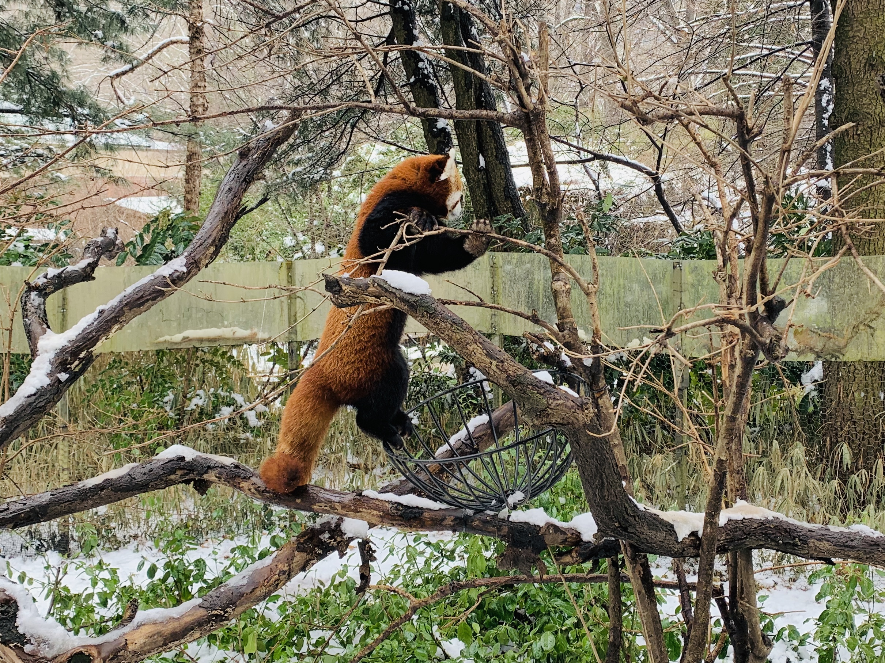
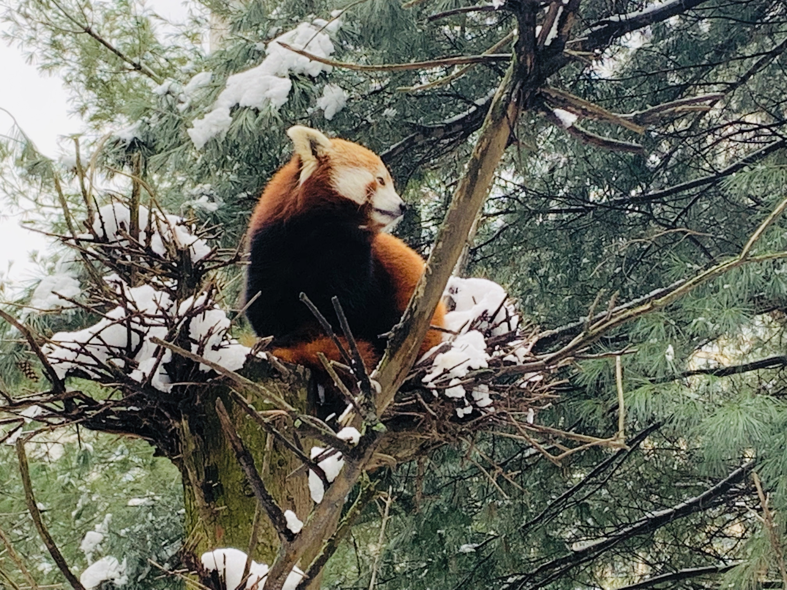
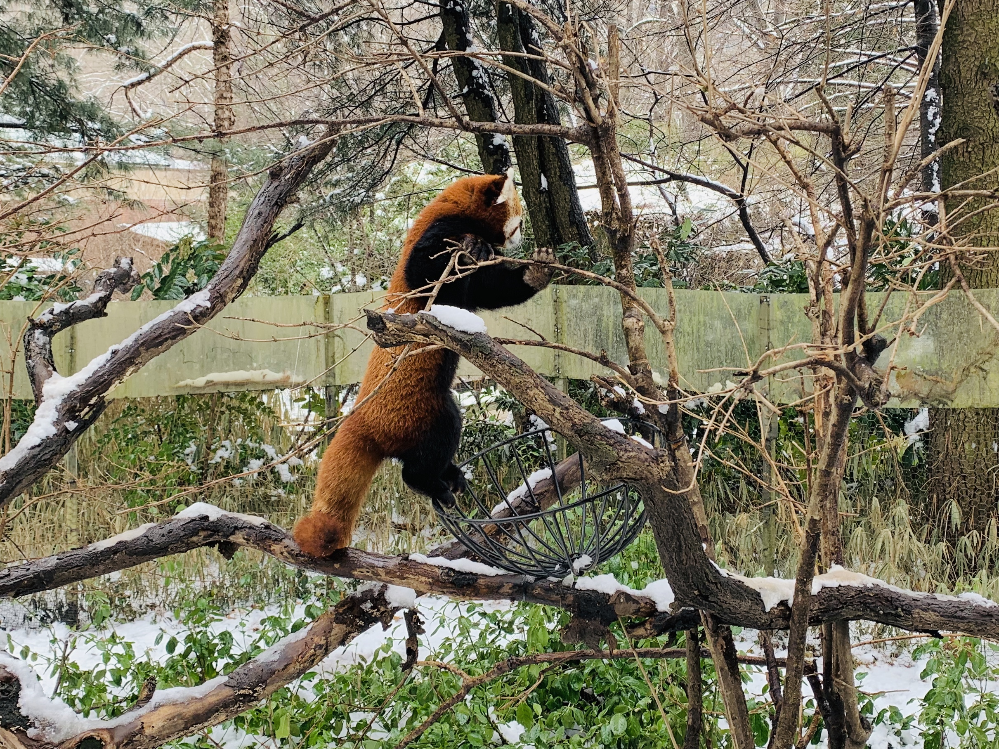
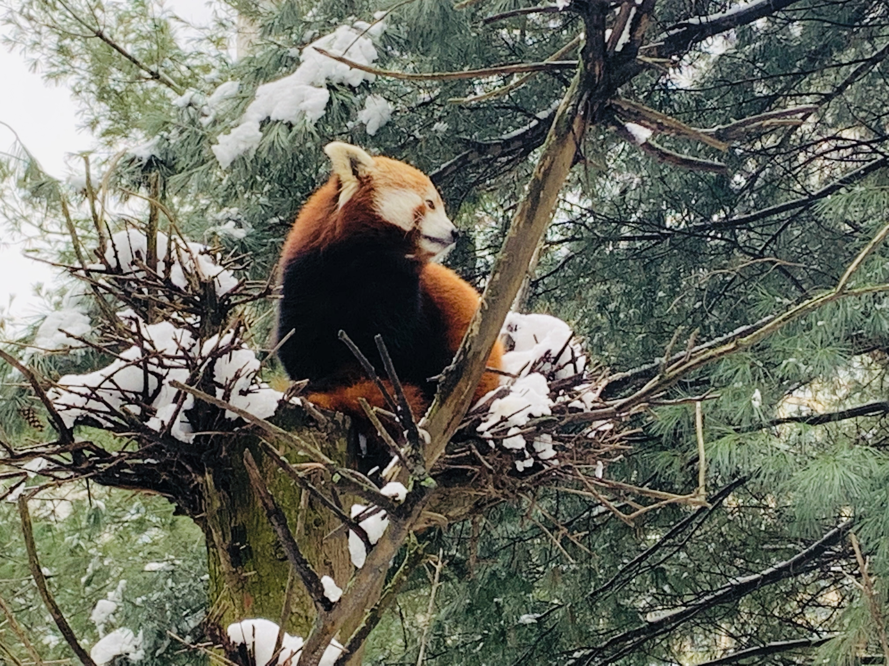

RED PANDA (Ailurus fulgens)

ANIMAL CHOICE
I had previously been researching the Arctic Fox, and really enjoying it. However, because the Central Park Zoo did not have this animal on display, I chose the red panda. I wanted to choose the closest animal I could to an arctic fox and the red panda is similar in size, is also usually a solitary animal (as opposed to social), and is a mammal that walks/runs on all fours.
ETHOGRAM OBSERVATION
The Ethogram activity was interesting especially because there were two red pandas in the enclosure that were exhibiting very different (almost opposite) behavior. One was sleeping up in a tree while the other was constantly running around the enclosure and climbing branches nonstop. I chose the running red panda to do my official ethogram for, however I took note of these intriguing differences.
 



HOMUNCULUS